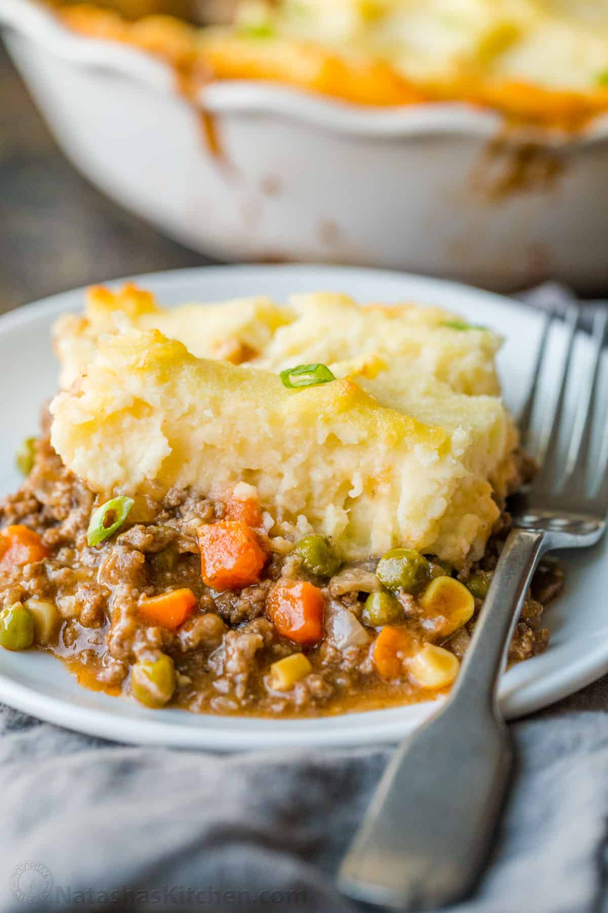

Shepherd's Pie

Description:
This shepherd's pie with ground beef in a rich gravy, topped with a layer of cheesy mashed potato is guaranteed to satisfy even the pickiest of eaters. Plus, it's a great way to sneak some extra veggies into dinner!
Ingredients
- Ground beef mince
- Mashed potatoes
- Carrots, onions, and peas
- Flour
- Ketchup
- Beef broth
- Cheese
Steps
- Bring a large pot of salted water to a boil. Add potatoes and cook until tender but still firm, about 15 minutes. Drain and mash. Mix in butter, finely chopped onion and 1/4 cup shredded cheese. Season with salt and pepper to taste; set aside.
- Bring a large pot of salted water to a boil. Add carrots and cook until tender but still firm, about 15 minutes. Drain, mash and set aside. Preheat oven to 190 degrees celcius.
- Heat oil in a large frying pan. Add onion and cook until clear. Add ground beef and cook until well browned. Pour off excess fat, then stir in flour and cook 1 minute. Add ketchup and beef broth. Bring to a boil, reduce heat and simmer for 5 minutes.
- Spread the ground beef in an even layer on the bottom of a 2 quart casserole dish. Next, spread a layer of mashed carrots. Top with the mashed potato mixture and sprinkle with remaining shredded cheese.
- Bake in the preheated oven for 20 minutes, or until golden brown. Serve hot and enjoy!